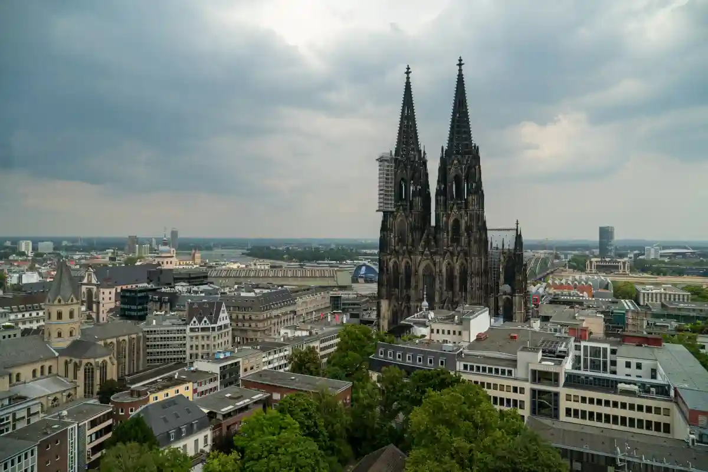
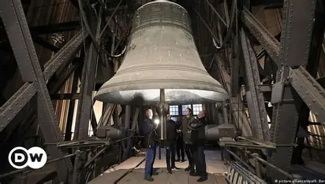

Кельнський собор: 4 факти, які ви про нього не знали
Кельнський собор — одна з найвідоміших пам'яток Німеччини
-
Кельнський собор будували понад 600 років

Перший камінь у фундамент готичного собору (відомого німецькою мовою як Kölner Dom) був закладений у серпні 1248 року. Однак відсутність грошей та інтересу до проекту призвели до того, що будівництво було завершено лише 1880 року. Велике сприяння цьому надав король Фрідріх Вільгельм IV. Собор було завершено через 632 роки з початку будівництва.
-
Колись собор був найвищим будинком у світі

З 1880 по 1884 Кельнський собор був найвищим будинком у світі. Потім його обігнали Монумент Вашингтона та Ейфелева вежа.
-
Тут знаходиться найбільший дзвін у світі

Якщо ви підніметеся 533 сходинками до Південної вежі, щоб подивитися на горизонт Кельна, обов'язково варто подивитися на дзвін Святого Петра. Це один із восьми дзвонів собору, який важить 24 тонни і є найбільшим у світі. Він дзвонить лише у особливі державні свята, такі як Різдво та Новий рік.
-
Кельнський собор не завжди був темно-сірим

Насправді зовні собор зроблений не з чорного матеріалу, і він не брудний, як багато хто думає. Більшість будівлі виконано їх пісковика, який, вступаючи у реакцію із сірчаною кислотою, стає темно-сірим, надаючи собору його характерний темний колір. З цієї причини відремонтовані ділянки виглядають набагато світлішими, ніж інші частини будівлі.